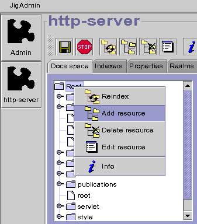
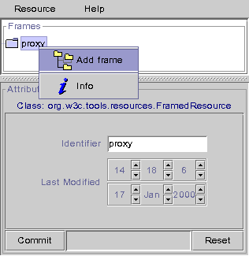
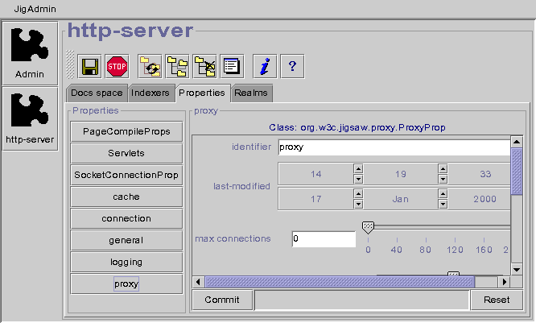

Running Jigsaw as a proxy involves the following steps:
1) Open a JigAdmin window (see JigAdmin documentation)
2) Create an instance of the org.w3c.tools.resources.FramedResource resource in the root resource store, by selecting the "Root" node and selecting "Add Resource" in the popup menu (right click). Select FramedResource as the resource class. Type the resource name in the identifier field (ie proxy), and click on "Ok".
|  |

|

3) Add a ProxyFrame to your new resource. In the resource editor, select the "proxy" node and click on "Add Frame" in the popup menu (right click). Select "org.w3c.jigsaw.proxy.ProxyFrame" as the frame class to add and click on "Ok".
|  |

|
4) Select the "ProxyFrame" node and edit its attributes. Type the old root resource name in the "local-root" field (ie root) and click on the "Commit" button. Attributes are described in the reference page of ProxyFrame.

5) The proxy properties. Attributes are described in the reference page of ProxyProp. 
6) Edit the general properties. Set the "Root Name" property to proxy and click on the "Commit" button.

7) Save the configuration, Jigsaw is now running as a proxy. Reconfigure your browser to run it...and have fun !